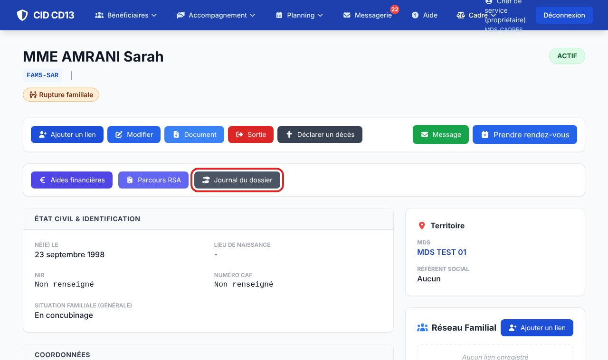
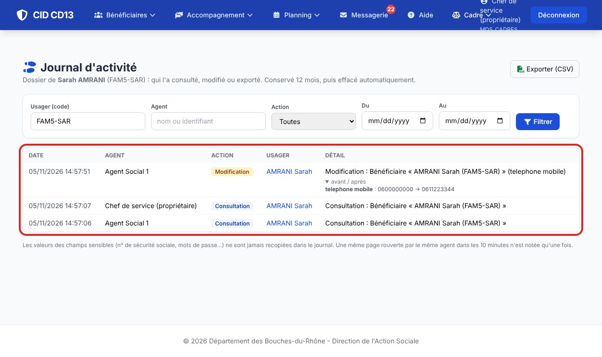
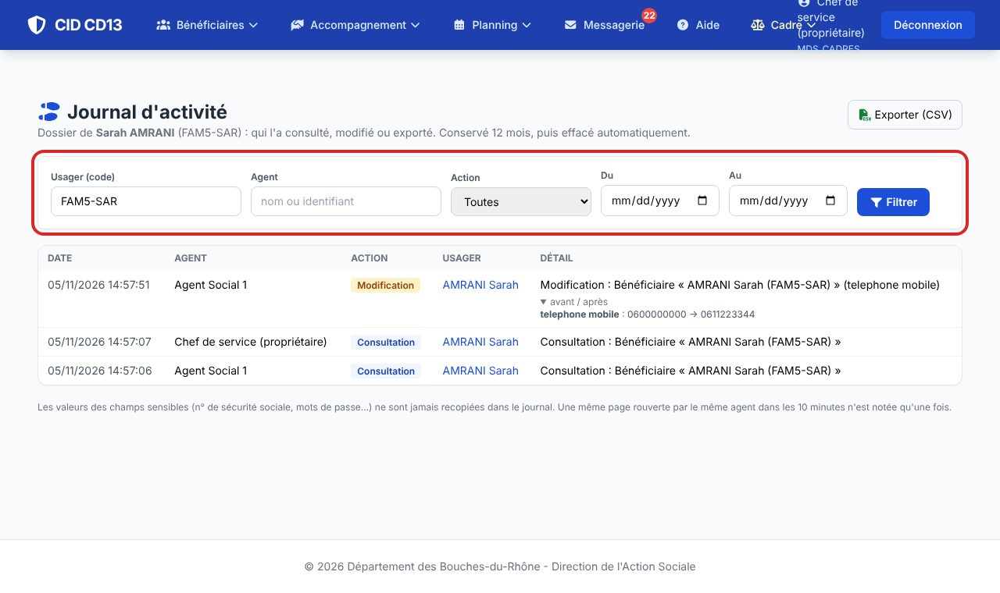

1Ouvrir le journal d'un dossier

- Sur la fiche de l'usager, cliquez sur Journal du dossier (visible des cadres et des administrateurs).
2Lire le journal

- Chaque ligne : la date, l'agent, l'action (consultation, création, modification, suppression, export, téléchargement) et le détail.
- Une modification montre l'avant / après des champs modifiés ; les champs sensibles (n° de sécurité sociale…) ne sont jamais recopiés.
3Chercher et exporter

- Filtrez par usager, agent, action et période (les 30 derniers jours par défaut). Exporter (CSV) reprend la sélection.
Bon à savoir
- Le journal est conservé 12 mois, puis effacé automatiquement (durée réglable : clé JOURNAL_DUREE_MOIS de la configuration).
- Une même page rouverte par le même agent dans les 10 minutes n'est notée qu'une fois.
- Un cadre ne voit que ce qui touche aux dossiers de sa MDS.
Cliquez sur une image pour l'agrandir. Le cadre rouge montre où cliquer ou quoi remplir. Toutes les données affichées sont fictives.